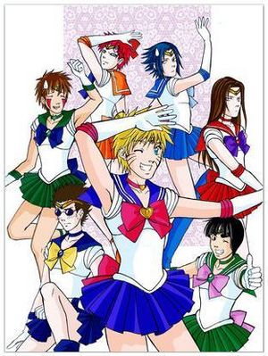
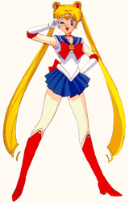
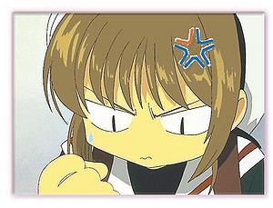

Sailor Moon
 De: La Frikipedia, la enciclopedia extremadamente seria.
De: La Frikipedia, la enciclopedia extremadamente seria.

|
CUIDADÍNEste artículo o sección contiene alerones feos. O sea
SPOILERS.
|
| De la serie anime para todos:
|
| Sailor Moon
|
|
|
| Género:
|
Estúpido Magical Shojo, comedia, de hostias, Sentai (que no hentai, enfermos)
|
| Episodios:
|
Incontables
|
| Autor del manga:
|
Una farmacéutica con problemas mentales Naoko Takeuchi
|
| Publicación:
|
1992
|
| Publicado en:
|
Shonen Jump Nakayoshi, run run (Kōdansha)
|
| Director del anime:
|
Junichi Sato
|
| Transmitido en:
|
Japon
|
| Ovas:
|
Es posible
|
| Películas:
|
A punto
|
| Notas
|
Serena Bunny Usagi es rubia, su hija tiene cabello rosado. ¿Quién lo entiende?
|
En japonés: (美少女戦士セーラームーン) Traducido al español como Preciosa Guerrera Marinera de la Luna. Si estás viendo este artículo, es porque eres un pajuo gilipollas pervertido y buscas ver falditas pequeñas para darte una manita.
Argumento
Es un manga creado por Naoko Takeuchi tras probar las drogas medicinas con las que traficaba que vendía en su farmacia (sí es farmaceutica) en 1992. La serie era particularmente famosa por volver a popularizar el género de las Magical Girls, y sus elementos hentai consiguieron que su éxito también fuese masivo entre el sector masculino, ya saben, los pervertidos y los que solo quieren verlas en sus tranformaciones debido a que se les transparenta todo de todo (como Tú y no mientas IP anónima) que les encanta ver falditas chiquitas y tanguitas blancas, que originalmente no están interesados en ver este tipo de historias entre cursis y tontas, pero les encanta ver a las sailors con diminutos atuendos que despiertan sus sueños pervertidos, recuerden que allá en Japón (maldita sea ¿por que siempre en japón?) esta muy castigado que anden con niñitas o muy jovencitas minimo que tu tengas 19 y tu novia 16. Así que los japoneses satisfacen sus antojos perversos con este tipo de historias y dibujitos eróticos (y Tú tambien).
Esta historia cuenta las hazañas de Usagi Tsukino mejor conocida como Serena o Bunny (depende de donde seas), una adolescente muy distraída e imprudente en su vida (y vaya que era distraída y tonta, sinceramente no se por que coño la escogieron como líder), la cual conoce por casualidad a una gata llamada Luna, quien le habla (Sí han leido bien, es una gata parlante) acerca de su misión como Sailor Senshi y de dominar el mundo salvar a la Tierra de futuros invasores malignos.

Algún
Friki quiso ser alguna vez una bella y delirante princesa...
sigue reclutando mas putas surgen las demás sailors, Sailor Mercury, Sailor Mars, Sailor Jupiter y Sailor Venus respectivamente.
Como en todo buen shojo, no podía faltar el galán con pintillas de haber vivido durante un mes en Vietnam a base de "salchichones": Tuxedo kamen, y así comienza esta historia "apasionante". Luna, siguiendo con su malvado plan de forrarse a base de explotar a niñas estúpidas en su puticulb de tercera, les dice que andan en una misión para salvar al mundo de malvados seres de otras dimensiones, y así tener una excusa para obligarlas a llevar ese cortísimo "uniforme escolar".
Dado que Usagi es la "lider" del grupillo en cuestión, le dice que ella es la princesa de Space jump, creada por los malvados de la Warner Bros. y abandonada posteriormente por ser peculiarmente tonta (incluso en comparación con el cazador que intenta comerse a Bugs Bunny, cuando todos sabemos que la carne de ese conejo debe estar mala, ya que se mete algo). Para que se lo crea de verdad le da la varita de Harry Potter, pero con un toque más shojo (para no defraudar a los ávidos enfermos que ven este tipo de series por el erotismo que les producen las "infantilidades" extremadamente "shojentas". Eso, o para las delicadas niñitas que ven esta serie).
Con la varita se transforma en Sailor Moon, pasando previamente por el "trance" en la que se cambia de ropa mientras grita con su delicada voz de princesita de siete años: "poodeeer dee luunaaaaa" dándole una razón más a Luna para mantenerlas como "empleadas" (no tienen contrato... solo caramelos y vibradores a modo de pago), ya que atraen a más clientes. Cuando Luna se deja llevar por su ambición y anhelo de poder, las pone a buscar el Cristal de Plata (todo esto a tiempo parcial, porque no puede perder dinero en el puticlub). Finalmente, logran encontrar el Cristal de Plata, que resulta ser una gran piedra de éxtasis. Serena no puede evitarlo, se lo traga entero y se convence a sí misma de que es la auténtica princesa de Space jump, tras lo cual le pide a Dolce & Gabanna que diseñen su vestido. Tras esto se desconoce su vida futura, al igual que el del resto de las chicas. Aun así hay quien sospecha de que Luna tuvo que cerrar el puticlub por culpa de un inspector de sanidad, que encontró pelos de gato por todo el local.
¿Te lo creiste? pues en realidad tambien tenía poderes al igual que sus amigas, y si, eran reales, tan reales como los de goku, pero es verdad todo lo que dijo del puticlub.
Personajes
 Las
putas Sailors en posición de combate. Muy monas verdad?
- Sailor Moon: Ese es su nombre de "batalla", su nombre real es Usagi Tsukino. Luna, la escogió por ser la más
puta lista y competente de las demás. Se podría describir como la típica pija calienta braguetas de 14 años una chica que llora por demasiadas ridiculeces (como por ejemplo, que se le parta una uña), a pesar de estar enamorada de Mamoru va detrás de cualquier chico guapo que se le ponga por delante, y es tan rematadamente retrasada que no se da cuenta de que Mamoru es en realidad el zorro el tio ese del antifaz que siempre le salva el culo en el último momento. Es la "lider" del grupo de las zorras ninfomanas Sailor shenshis, le encanta comer como un cerdo y luego llorar porque engorda y dormir sola o acompañada (y ya saben a lo que me refiero).
- Sailor Mercury: Su nombre original es Ami Mizuno, la listilla de la serie (tampoco hay que tener un CI de más de 90 para serlo), pero en realidad es una n00b (segun la autora su CI es de 300 pero eso no se lo cree ni diox), por eso carga siempre con su PALM con internet para así poder consultarlo todo en la Frikipedia. No obstante nunca confesará su secreto, para despertar la envidia de Usagi. Antes de ser Sailor Senshi ni siquiera tenía amigas, se pasaba el día
tocandose estudiando, su sueño humedo es violar a Mamoru ser médica como su puta madre.
- Sailor Mars: Su nombre es Rei Hino (curiosamente la única que no tiene cambios), la más cachonda de todas, siempre se cree la última
puta cerveza del desierto y se cabrea con todos por casi cualquier cosa, a veces demuestra ser ocurrente. Por los días es sacerdotista y en la noche se va a trabajar de prostituta con sus amigas. Está al pie de guerra siempre con Usagi pero en realidad la quiere violar, también a dado señales de querer quitarle el novio/marido.
- Sailor Jupiter: Su nombre es Makoto Kino, la ninfómana del grupo (así como la marimacho). La verdad es que ya tenia experiencia bailando en antros y burdeles de mala muerte y así le habían hecho el carácter, su sueño es tener su propio centro nocturno y tener orgias con todos sus clientes. No obstante, no lo tiene fácil: tiene un gusto peculiar por el sadismo y el maltrato físico al sexo masculino. Mejor no enfadarla... ni alegrarla en exceso. También se cree que además de ser Japonesa es vasca por la fuerza tan increible que parece tener.
- Sailor Venus: Se llama Minako Aino. Las más facilona de todas, la que siempre anda ligando por ahí pero Luna no la deja mucho que digamos. Es una buscona de mucho cuidado, la reina de las compras y el despilfarre. Tiene celulitis, cabe destacar que tiene su propia serie también pero no le pagaban lo suficiente... y fue la primera sailor senshi que se presenta en la serie como Sailor V, e iba repartiendo caña por ahí con su uniforme de colegiala y una
estupida máscara para pasar de incognito, por lo tanto es un poco retrasada(ya que en realidad era facilmente reconocible).
 Serena Tsukino disfrazada de
prostituta Sailor Moon para ir a una fiesta de disfraces.
- Sailor Neptune: Le gusta lo delicado y la música. Es lesbiana. En sus ratos libres le gusta liarse con Sailor Uranus a quien veremos mas adelante.
- Sailor Uranus: Algunas la confunden con un chico, por sus maneras y apariencia de cierto carácter masculino. También es lesbiana. Se lia con Sailor Neptune. Está ahorrando para pasar por el quirófano y hacerse un pene, por el cumpleaños de su novia.
- Sailor
Puta Pluto: La factoría Disney ya está preparando el papeleo para demandar el plagio, mientras tanto el nombre se queda tal cual. Tiene un gran vibrador bastón mágico y vigila la puerta que conduce a diferentes épocas de tiempo. A quien se atreva a cruzar la puerta sin su permiso... zas!, bastonazo en todo el culo. Decir "en", no implica "dentro de". Pero mejor no darle ideas.
- Sailor Saturn: (no confundir con Sega Saturn) Es una chavalina enfermiza, sin mucha resistencia, por eso aparece cuando la serie está muy avanzada (demasiados capítulos seguidos habrían acabado con su vida). Irónicamente tiene el poder de curar a los demás. Cuando le viene la menstruación, expulsa chorros de sangre por el culo, por eso anda tan enferma, y tiene que utilizar almohadas en lugar de toallitas sanitarias. Todo eso se debe a que cuando era pequeña, tuvo un accidente de laboratorio bien jodido y muy cojonudo.
- Tuxedo Kamen: En realidad se llama Mamoru Chiba,
es un gilipollas el puto galán que un día se mete al puticlub y ve bailar a Usagi y a sus amiguitas pero se queda como baboso viéndola en esa minifaldita y desde ese día su meta es robársela y como sabe que Luna, la dueña del burdel, no va a dejar que se la ligue (a esa maldita gata la va a atropellar un camión si no deja a sus putas vivir tranquilas!), decide disfrazarse y pedir trabajo de lo que sea para estar junto a Usagi, así se disfraza de Tuxedo mask (del cual Usagi demuestra que es retrasada al no tiene ni la más remota idea de quien puede ser y eso que es fácimente reconocible), el idiota que cree que con rosas va a herir a alguien (en realidad es un homosexual perdedor que no tiene ni donde caerse muerto), con el tiempo va conociendo bien a Usagi y se da cuenta de que es una estúpida y prefiere andar con otras guarras por ahí. En el futuro consigue tirarse casarse con Usagi demostrando su pésimo gusto.
- Luna: Es una gata negra con un raro simbolo de luna en la frente. Es la dueña de un puticlub de tercera donde mete a jovencitas de 14 a 20 años (las Sailors), haciendolas vestir minifaldas muy cortas con la excusa de que ellas van a salvar el mundo de los ivasores malignos (en realidad les da drogas para que ellas alucinen que tienen combates belicos). La muy cachonda no deja que
sus putas las Sailors tengan sexo libremente, aunque cuando no las ve, ellas se lian con varios(as) sujetos(as).
- Artemis:Otro gato y novio de luna, al principio el quería hacer su propio puticlub solo con sailor venus. Pero como luna ya habia conseguido cuatro
putas sailors, tuvo que aliarze con ella. Ademas el enviaba ordenes a luna de que hacer cuando sus prostis no la obedecian.
- Diana:Otra gata, y la hija de luna y artemis
(Es injusto que esa pinche gata si pueda tener sexo libremente y sus prostis no) Diana sueña con hacer su propio prostíbulo con Chibi-usa y chibi chibi, pero la gata de su madre no la deja.
 Ni ella, ni CLAMP soportan q este churro de sailor moon sea mas exitoso q el suyo
- Chibi moon: La mini-putita de la serie (y el deseo de los lolicons enfermizos de la serie). al parecer tiene una relacion "muy intima" con Tuxedo Kamen y se pelea constantemente con Usagi por él (gilipolleces), su nombre real es Chibiusa Tsukino. Moja la cama y también llora por subnormalidades, al igual que Usagi. Las Sailors en más de una ocación se han planteado filtrar el agua de sus orines y lágrimas, a fin de ahorrar en agua para ducharse, pues tal cantidad de líquido expulsado es digno de aprovechar. Esta niña se cree que es mas madura que Usagi, pero no es mas que una
puta mas del rebaño de putas mojigatas del puticlub de Luna pequeña niña con deseos de crecer. Durante un tiempo se unió al prostibulo del clan de black moon donde su poder sexual aumentó y se convirtió en Black-lady, con forme avanza la serie nos damos cuenta de que es una incestuosa y que en realidad viene del futuro (su identidad real es la chica de neutrex) del año 3000 o algo así.
- Three Star Lights: Son un trio de lesbianas sadomasoquistas que se transforman en hombre y viceversa. Visten de negro y su proposito es encontrar a la
puta Princesa Fireball. Tambien son una banda de pop muy famosa en la serie, he aqui sus integrantes:
- Sailor Star Fighter: Es la integrante mas cachonda del trio en cuestión, la vocalista del grupo y toda una hermafrodita. es muy cachonda, su caracter es aun mas fuerte que el de Sailor Mars.
- Sailor Star Healer: La segunda de todas es una presumida de mierda, la guitarrisata del grupillo de putas hermafroditas. Desprecia a las Sailors alegando que son unas rameras, cuando en realidad lo unico que quiere es tener sexo con ellas a toda costa.
- Sailor Star Maker: La tercera y ultima de las tres chifladas sadomasoquitas es una friki aun mas "lista" (por decirlo de alguna manera) que Amy Mizuno (Sailor Mercury), y siempre esta compitiendo con ella por saber quien es mas Nerd. Es la encargada de tocar el teclado
y las pollas de los fans
- Sailor Chibichibi moon: La unica prueba existente en el mundo de que la prostitución no tiene edad... a sus escasos 3 años de vida, esta pequeña ha sacrificado su infancia para explotarse junto a las Sailor Shenshis como prostituta mojigata de una puticlub de cuarta categoría... (por Dios, en que mundo tan cruel hemos nacido?) supuestamente es la clave de cierta mierda que ya no recuerdo y su procedencia es desconocida, aunque se rumorea que es la hija perdida de
La tetona Tsunade Laura en américa..
Villanos
- Reino Oscuro: Es un puticlub que secuestra guarras por hay y las convierte en youhmas
(De Ahí es que todas las munstruos estan re-buenas para ser aliens).Está formado por sus cuatro generales jedait, neflait, kunzait y zosite el mas gay inteligente de todos, el cual es el esclavo sexual amigo de kunzaite, los cuatro buscan semen energía de los humanos. Debido a que le hacían competencia al prostíbulo de luna la gata, y que destruyeron al que ya tenía en el satélite con su nombre, es que son enemigos, aparte de que tambien buscan al afrodisíaco cristal de plata ya que con su poder sexual su lider, la madame reina beril despertará a metalia y violará destruirá a todos los humanos. Como ya había dicho los controla la reina beryl.
- Clan
Uchiha black moon : No es mas que un montón de incestos familia que tambien quieren el poder sexual del cristal de plata y como no se los dieron huyeron a otro planeta. Decidieron ir al pasado osea el presente y robárselo a serena mientras esta pendeja vulnerable, tambien buscan a la niña rosada. Entre ellos están los putos principes zafiro, diamante y esmeralda, y las cuatro putas hermanas de la persecución. Su lider es el GRAN VIOLADOR SABIO.
- Alan y ann: Dos hermanos incesto extraterrestres
No Itachi y Sasuke Uchiha, que quieren alimentar a su árbol de semen energía y mandan a las pornocartas clow de Sakura Card Captor a destruír a Sailor Moon.
- Cazadores de la muerte: Son unos
frikis científicos que quieren descifrar el codigo Davinci para encontrar el santo grial. No es mas que otro puticlub al que pertenecian sailor uranus y neptune, las cuales huyeron al de luna. Tienen como esclava sexual a Hotaru Tomoe (Sailor saturno, pues) la cual debes encuando libera su poder sexual y se convierte en la dama nueve, la cual tiene contacto sexual con su padre y su lider pharaoh 90.
- Dead moon circus: Al igual que todos los villanos es un
puticlub grupo, el cual esta encabezada por la reina neheria y su esclava sexual ayudante zirconia, las cuales tienen como objetivo liberar a neheria del espejo, Encontrar a pegaso para que les enseñe el juego de yugioh Y hacer de todos los humanos sus juguetes sexuales sirvientes. Entre sus prostis se encuentran el cuarteto de perras amazonas. Y el trío, que como su nombre lo dice, hacen un trío. Tambien esta ojo de pez, quien alguna vez fuera novio amigo de sosite del reino oscuro.
- Sailor galaxy y su imperio: Es el último
puticlub grupo de villanos de la serie, la madame es Sailor galaxy (Quien no es mas que un juguete para chaos) quien se dedica a prostituir a un grupo de zorritas llamado las sailor animanates y a buscar la semilla sexual estelar de las verdaderas sailor scaut y destruír el puticlub de luna para que el suyo sea el mejor de la galaxia. Entre otras estan sailor nyanko y sailor iron maus. Las más cachondas de ahí, sin embargo solo son dos lesbianas de closet fanáticas de fapea seguido, y en una de esas fue que creo a los demas villanos.
Otros
- Naru Osaka: Tambien conocida como Kari o Molly. Ella es
el juguete sexual la mejor amiga de Usagi. Ella queria ser puta sailor, pero no la dejaron, asi que decidio tratar de follarse a neflait del reino oscuro. Pero el gay de sosite se puso celoso y lo violo se deshizo de el. Ella tenia tendencias emo, ya que despues de la muerte de neflait se deprimio y quizo cortarse las venas. Pero al final tuvo que tener sexo conformarse con kelvin. (El de abajo)
- Kelvin: Es el
primer violador de Usagi nerd de su clase. Era uno de los pocos amigos de serena (y eso que era un friki). Al principio todos pensamos que el era tuxido kamen. Pero con el paso del tiempo nos dimos cuenta, que era lo unico con lo q se conformo naru despues de la muerte de su amado neflait. (imaginate conformarse con un nerd como novio). El fue el primer cliente que contrato a Usagi.
- Familia de Usagi: Son tan retrasados que incluso Chibiusa logró engañar para poderse quedar en
el prostibulo de luna el pasado. No tienen ni la menor idea que su hija o hermana es una prosti sailor.
- Abuelo de Rei: El viejo rabo verde estilo maestro roshi de Dragon ball, el es uno de los mejores clientes que ha tenido el prostíbulo de Luna, hasta que descubrio el verdadero trabajo de su nieta, y decidio irse al puticlub de Sailor Galaxy.
- Andrew Furuhata: Fue otro de los clientes de luna, contratando en numerosas ocasiones a serena y a Lita. Durante la universidad conocio a Darien y ambos
experimentaron ser gays se volvieron amigos. Conocio a la boba de Usagi en los videojuegos y ahi se la cojio gratis, ocasionando que Luna se enojara con Usagi.
- Nicolas Kumada: Un cliente que llego a contratar a Rei. Es masoquista puesto en todo se deja maltratar por ella. Se unio al templo dizque para poder reformar su vida. Pero en realidad fue para cojerse a Rei hino de a gratis.
Efectos de ver la serie
Se dice que ningun hombre cuerdo es capaz de ver la serie y es porque ver la serie completa produce efectos nocivos en la mente de quien es obligado a servir de conejillo de indias y ver la serie. Entre muchos estan...
- Vestir Falda corta: Terminan entrandoles ganas irremediables de vestir el traje de marinerita igual que el tipo de la foto mas arriba, creyendose que asi pueden salvar el mundo y obtener poderes magicos.
Véase También
Enlaces Externos
Autor(es):
- Krusher
- Fordus
- Frikiman
- Aque
- Roms
- Azulejos
- Rerz
- Setokayba
- Mitsune78
- PaladinImperial
Frikipedia 2005-2016, Licencia
GFDL 1.2 - Extraído por FrikiLeaks